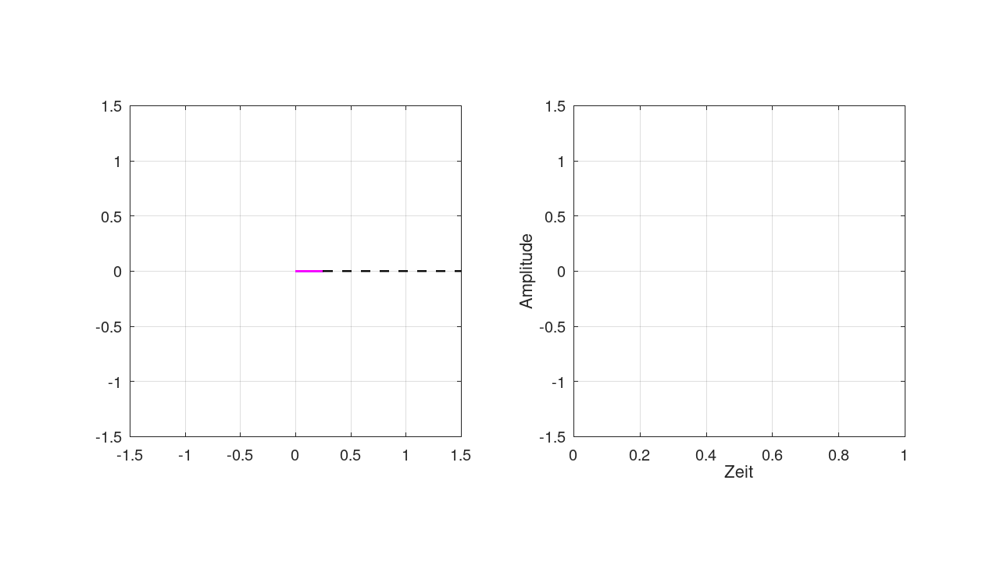

Hier noch einmal die beiden Beispiele zur AM. Dieses Mal ist allerdings die sogenannte Einhüllende in rot dargestellt und nicht das Modulationssignal.

Der Detektorempfänger schneidet nun mit der Diode alle Anteile unter der Nulllinie ab, und der Kondensator (oder die mechanische Trägheit des Lautsprechers) verbindet dann die Spitzen der einzelnen Halbwellen und rekonstruiert so die (obere) rote Kurve.
Nun zur SSB: Hier noch einmal die Zerlegung der AM in 3 Anteile:

Schauen wir uns hier das obere Seitenband einzeln an:

Der Empfänger fügt nun den am Sender entfernten Träger mit dem BFO wieder hinzu: